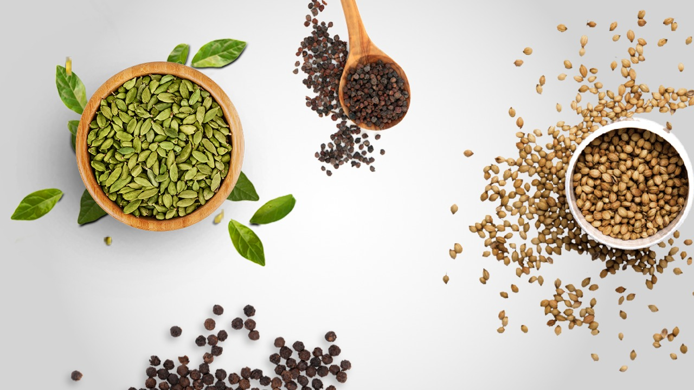

CASTOR OIL
Castor Seed Products including Castor Oil, Castor Oil Derivatives, D O C ( De oiled Cake) , High Protein etc.
CHUTNEY
Verieties of Chutneis Including Corrainder Chutney, All In One Chutney, Date & Tarmind Chutney, Schezwan chutney, Panipuri Chutney etc.
SAUCES
Offers verieties of delicious sauce including Dark Soya Sauce, Green Chilli Sauce, Red Chilli Sauce etc.
PICKLES
Pure and Healthy Pickles like Chhundo, Mango Pickle, Mango Lime Pickle, Mixed Pickle, Lime & Chilli Pickle etc..
PASTE
Origional and Ready to Use, Pure Pastes including Ginger Paste, Garlic Paste, Ginger Garlic Paste etc.
